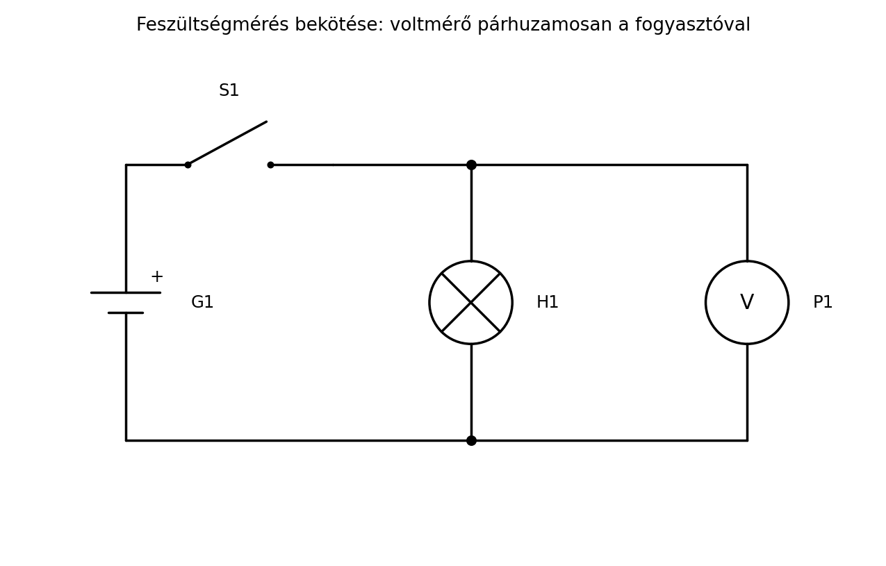
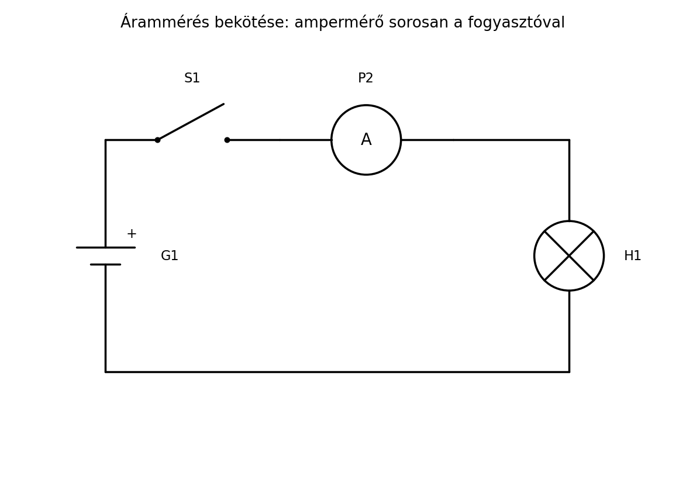
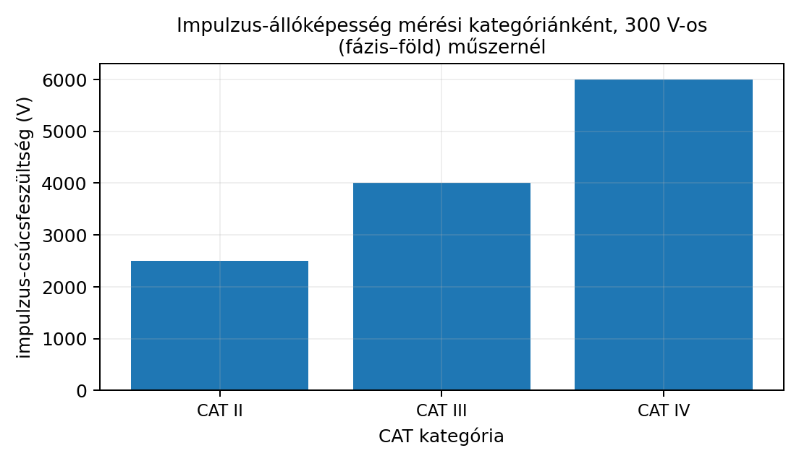

A villanyszerelő munkahelyi hétköznapjaiban a kapcsolási rajz és a számítás csak annyit ér, amennyit a valóságban méréssel ellenőrizni tudunk. Egy lakáselosztóban az a kérdés, hogy valóban megjelent-e a fázis a kismegszakító után; egy motor bekötésekor az, hogy a csillagpont valóban a csillagpont-e, és a tekercs nem szakadt-e meg. A hibakeresés során a leggyakoribb kérdések: „van-e feszültség?”, „folyik-e áram?”, „szakadt-e a vezeték?”. Ezekre a választ a digitális multiméter és a lakatfogó adja. Ha rosszul választunk méréshatárt, rossz csatlakozót használunk, vagy a mérési kategóriának nem megfelelő műszerrel dolgozunk, nemcsak téves mérési eredményt kapunk, hanem közvetlen áramütés- és ívveszélyt is okozunk.
Képzeljünk el három gyakori helyzetet:
Ez a három alaphelyzet határozza meg a mérőműszerek használatának minden fontos szabályát:

A rajzon jól látszik, hogy a feszültségmérő nem szakítja meg az áramutat: a fogyasztón továbbra is ugyanaz az áram folyhat, miközben a műszer a két csatlakozási pont közötti potenciálkülönbséget mutatja. Az árammérésnél éppen fordított a helyzet: a műszer a megszakított vezeték két vége közé kerül.

A második rajzon az ampermérő a kapcsoló és a lámpa közötti vezeték helyére került: a kör áramának minden töltése átmegy rajta, ezért kis belső ellenállású műszer kell.
A valódi műszerrel ugyanez így néz ki (az ábra az alábbi üzemmódok és
aljzatok ismeretét is összefoglalja): az 1. képen a mérőcsúcsok a lámpa
két kapcsán vannak, a kör zárt; a 2. képen kikapcsolt tápnál
megbontottuk a kört, a piros zsinórt átdugtuk az mA
aljzatba, és a műszert a szakadás két vége közé kötöttük; a 3. képen a
táp kikapcsolva, az ellenállást kiemeltük a körből, és Ω-állásban
mérünk.
A három bekötés közül csak a 2. igényli a kör megbontását és a piros
zsinór áthelyezését; ezt mindig kikapcsolt tápnál végezd, és a mérés
után a zsinórt azonnal tedd vissza a VΩ aljzatba. A
HTML-kiadásban a három bekötés egyenként is megnézhető.
Definíció. A digitális multiméter (DMM) olyan többfunkciós mérőműszer, amely feszültséget, áramot, ellenállást, folytonosságot, és gyakran diódát, kapacitást, frekvenciát vagy hőmérsékletet is képes mérni. A mért értéket számjegyes kijelzőn, automatikus vagy kézi méréshatár-választással jeleníti meg.
A multiméterek alapvetően két csatlakozóaljzattal rendelkeznek, de az áramméréshez gyakran külön aljzat tartozik. A leggyakoribb feliratok:
COM – közös (föld) csatlakozó, ide kerül a fekete
mérőzsinór.VΩ vagy VΩmA – feszültség-, ellenállás-,
dióda- és kisáramú mérés; ide kerül a piros mérőzsinór.A vagy 10A – nagyobb áramú mérés; csak
árammérésnél használjuk.A mérési üzemmódot forgókapcsolóval vagy nyomógombbal választjuk. A műszer mindig a kiválasztott állásnak megfelelő belső kapcsolást építi fel.
Az alábbi ábrán egy általános kivitelű digitális multiméter részei
láthatók számozva: az 1 kijelző az értéket és a mértékegységet (AC/DC)
mutatja, a 2 gombokkal rögzíthető a kijelzés (HOLD) vagy választható
kézi méréshatár, a 3 forgókapcsoló állásai a mérendő mennyiséget adják
meg. Alul a négy aljzat: a 4 10A és az 5 mA
csak árammérésre való, mögöttük vannak a 9 belső biztosítékok; a 6
COM aljzatba mindig a fekete, a 7 VΩ aljzatba
feszültség-, ellenállás- és diódaméréskor a piros zsinór kerül. A 8
CAT-jelölés a bemenetek mellett található.
Mérés előtt mindig két dolgot nézz meg együtt: a forgókapcsoló
állását és azt, hogy a piros dugó melyik aljzatban van; a kettőnek
egymáshoz kell illenie (például V~ állás és VΩ aljzat). A
HTML-kiadásban az egyes részekre mutatva megjelenik a nevük és a
szerepük.
Szabály. A feszültségmérőt mindig a mérendő két pont közé, tehát a fogyasztóval vagy áramköri résszel párhuzamosan kell csatlakoztatni. A műszer belső ellenállása feszültségmérésnél nagyon nagy, jellemzően (ellenőrizendő: a konkrét műszer adatlapja), így alig terheli az áramkört.
Számítás. Egy -os áramkörben két sorba kapcsolt, egyenként ellenállásból álló feszültségosztó középpontját mérjük:
Adott: , , voltmérő belső ellenállása .
Ideális esetben a felezőpont feszültsége:
A valós műszer az alsó ellenállással párhuzamosan kapcsolódik, ezért az eredő:
A mért feszültség:
Ellenőrzés: a műszer terhelő hatása kicsi, de mérhető; a hiba körülbelül . Ha az osztó ellenállásai nagyságrendekkel nagyobbak lennének, a hatás erősebb lenne. Ezért kell ismerni a műszer bemeneti ellenállását.
A feszültségmérésnél választani kell egyen- (DC) vagy váltakozó (AC) feszültség állást. A hálózati mérésre AC állást használunk. A korszerű műszerek egy része TRMS (valódi effektív értékű) mérésre képes, ami nem szinuszos jelalak esetén is pontosabb eredményt ad.
Szabály. Az árammérőt mindig az áram útjába, tehát a fogyasztóval sorosan kell beiktatni. Ehhez az áramkört feszültségmentes állapotban meg kell szakítani, és a műszert a megszakítás két pontjára csatlakoztatni. Az árammérő belső ellenállása nagyon kicsi, mert nem szabad jelentős feszültséget ejtenie a mért áramkörben.
Számítás. Egy multiméter mA-bemenetének belső ellenállása (szemléltető érték, ellenőrizendő). Ha a mért áram , akkor a műszeren eső feszültség:
Ellenőrzés: a fogyasztó -os tápfeszültsége mellett a -os esés elfogadható; ezért sorba lehet iktatni. A műszer árambemenete azonban nem tűri a túlterhelést: a belső olvadóbiztosíték védi, amelynek cseréje csak a gyártó által előírt típussal végezhető.
Tilos. Az árammérőt tilos a fogyasztóval párhuzamosan, például egy aljzat fázis- és nullavezetője közé kötni. Ekkor a kis belső ellenállás miatt gyakorlatilag rövidzár jön létre, amely kiolvasztja a műszer belső biztosítékát, károsíthatja a kapcsolót, és ívet okozhat.
Ugyanez a rövidzár jön létre akkor is, ha árammérés után a piros
zsinór az áramaljzatban marad, és valaki feszültséget akar mérni vele.
Az alábbi ábra bal oldalán ez a hiba látható: a forgókapcsoló V~
állásban van, de a piros dugó a 10A aljzatban, így a két
mérőcsúcs között a műszer közel 0 Ω-os söntje van. A jobb oldalon a
helyes bekötés: piros a VΩ, fekete a COM
aljzatban.
A forgókapcsoló állása nem véd meg ettől a hibától, mert a sönt az
aljzat és a COM között közvetlenül a mérőkörben van; ezért
a mérés előtti ellenőrzőlista 5. lépése (a dugók helye) legalább olyan
fontos, mint az állás kiválasztása. Hálózati feszültséget csak jogosult
személy mér, a mérési helynek megfelelő CAT-besorolású műszerrel. A
HTML-kiadásban a hibás és a helyes bekötés váltogatható.
Szabály. Ellenállást és folytonosságot csak feszültségmentes áramkörön szabad mérni. A műszer saját, kis mérőáramot bocsát ki, és a mért feszültségből számítja az ellenállást:
ahol a műszer által kibocsátott mérőáram, pedig a mért feszültség. Ha az áramkör feszültség alatt van, a mérés értelmezhetetlen, és a műszer is károsodhat.
Folytonosságmérésnél a műszer hangjelzést ad, ha az ellenállás egy beállított küszöb alatt van, jellemzően néhány tíz ohm alatt (ellenőrizendő). Ezzel gyorsan ellenőrizhető, hogy egy vezeték nem szakadt-e meg.
Diódamérésnél a műszer a diódára kis nyitóirányú
feszültséget kapcsol. Szilíciumdiódánál nyitóirányban
–
közötti értéket, záróirányban OL (túlcsordulás) kijelzést
várunk. LED-eknél a nyitófeszültség nagyobb, jellemzően
–,
ezért a szokásos diódamérés nem mindig mutat jó eredményt.
Definíció. A lakatfogó olyan árammérő, amely a vezető körül zárható vasmagos nyílással, az áram útjának megszakítása nélkül méri az áramot. A váltakozó áramú lakatfogó az áramváltó elvén működik: a vezető egymenetes primer tekercs, a lakatfogó vasmagja pedig a szekunder tekercset gerjeszti. Az egyenáramú mérésre alkalmas lakatfogók Hall-szenzort is tartalmaznak.
Szabály. Üzemi (terhelő)áram méréséhez a lakatfogóval mindig csak egyetlen eret fogj át. Ha egy kábel fázis- és nullavezetőjét együtt fogod át, a műszer az áramok különbségét (a szivárgóáramot) méri: a visszavezető áram ellentétes iránya kioltja a fázisáram mágneses terét, így üzemi áram mérésére ez nulla közeli értéket ad; szivárgóáram mérésére viszont éppen ez a módszer (lásd alább).
A lakatfogó különösen hasznos:
Figyelem. A mérési érték erősen függ a vezető pozíciójától a lakatfogó nyílásában. A pontos méréshez a vezetőt a nyílás közepére kell helyezni, és kerülni kell a közelben futó más áramvezetőket.
Az alábbi ábra bal oldalán a lakatfogó részei láthatók: az 1 pofák az osztott vasmagot tartalmazzák, a 2 nyitókarral nyitjuk őket, a 3 tapintható gát jelöli, meddig szabad a műszert fogni (a pofák felé eső részt mérés közben nem fogjuk). A jobb oldali képek a vezeték irányából nézve mutatják a három helyzetet: a) üzemi áram mérése egyetlen éren, a nyílás közepén; b) a teljes kábel a fogóban – az L és az N árama kioltja egymást, a kijelző közel 0 A-t mutat; c) szivárgóáram-mérés mA-felbontású fogóval, az L és az N együtt, a PE kívül.
A b) kép a leggyakoribb kezdő hiba: a kábel köré zárt fogó „nem mutat semmit”, pedig a fogyasztó működik. Üzemi áramhoz ezért a kábel ereit szét kell választani (például az elosztóban, a sorkapocs előtt), és csak az L eret fogjuk át. A HTML-kiadásban a részekre mutatva és a három helyzet között váltva ez kipróbálható.
A mérési kategória nem a mérendő feszültség egyszerű nagyságát jelöli, hanem azt, hogy a műszer milyen hálózati ponton, milyen tranziens túlfeszültségnek képes ellenállni. A hálózaton kapcsolási műveletek, villámcsapás vagy motorindítás miatt rövid, nagy amplitúdójú túlfeszültség-lökések keletkezhetnek.

Szabvány. A mérőműszerek biztonsági követelményeit az MSZ EN 61010-1 sorozat tárgyalja (a pontos kiadást ellenőrizni kell). A szabvány szerinti mérési kategóriák:
Szabály. A műszeren feltüntetett CAT-kategóriának és névleges feszültségnek legalább akkorának kell lennie, mint a mérendő hálózati pont kategóriája. Lakáselosztóban például CAT III vagy CAT IV besorolású műszer ajánlott; aljzati mérésre CAT II is elegendő lehet, de a biztonságos gyakorlat inkább a magasabb kategóriát választja.
Az alábbi épületmetszet megmutatja, hol melyik kategória érvényes: a CAT IV zóna a földkábel és a homlokzati mérőhely a főbiztosítókkal, a CAT III zóna a lakáselosztó és a fixen szerelt fogyasztók (lámpatest, kapcsoló), a CAT II zóna a dugaszolóaljzatról táplált készülék.
Ugyanaz a 230 V más-más kategóriát jelent attól függően, milyen közel vagyunk a betápláláshoz: a mérőhelyen a villám- és kapcsolási tranziensek sokkal nagyobbak, mint egy aljzatnál. A HTML-kiadásban a zónák ki-be kapcsolhatók, és rájuk mutatva megjelenik a magyarázatuk.
A mérőzsinórnak ugyancsak rendelkeznie kell CAT-besorolással, és annak nem szabad alacsonyabbnak lennie a műszerénél; a mérőkörben mindig a kisebb besorolás érvényes. A zsinórok épségét minden mérés előtt ellenőrizni kell: repedt szigetelés, kilazult banándugó, sérült fogantyú esetén a zsinórt azonnal ki kell cserélni.
A mérőzsinór felépítését az alábbi ábra mutatja: az 1 burkolt (védőgalléros) banándugó a műszer aljzatába kerül, a 2 kettős szigetelésű zsinór belső, világos rétege kopásjelző, a 3 markolaton olvasható a CAT-besorolás és a névleges feszültség, a 4 ujjvédő perem jelöli, meddig szabad a mérőcsúcsot fogni, az 5 csúcsvédő sapka CAT III/IV méréshez csak rövid fémrészt hagy szabadon a 6 mérőcsúcson. Az alsó sor a sapka nélküli (CAT II) és a sapkás (CAT III/IV) csúcsot, valamint egy selejtezendő zsinórt mutat.
A csúcsvédő sapka szabad fémhossza jellemzően legfeljebb kb. 4 mm (ellenőrizendő: MSZ EN 61010-031 és a gyártói adatlap): így a csúcs elosztóban nem tud két szomszédos kapcsot vagy sínt egyszerre áthidalni. Ha a kopásjelző réteg bárhol kilátszik, vagy a dugó burkolata hiányzik, a zsinórt nem szigetelőszalagozzuk, hanem kicseréljük. A HTML-kiadásban az egyes részekre mutatva megjelenik a nevük és a szerepük.
A műszer belső olvadóbiztosítéka csak az árammérő bemenetet védi. A feszültség- és ellenállástartományokat belső áramkörök védik. A biztosítékot soha nem szabad nagyobb értékűre vagy házi készítésű huzallal pótolni, mert akkor a következő hiba már a műszer tönkremenetelét vagy sérülést okoz.
Gyakorlati recept. A multiméter és lakatfogó használata előtt, minden mérési feladatnál végezd el az alábbi lépéseket:
VΩ aljzatba, nagy áramnál az A aljzatba.Egy villanyszerelő egy ipari elosztóban azt vizsgálta, hogy egy megszakító után valóban megjelenik-e a feszültség. A feszültség jelenlétét csak feszültség alatt lehetett igazolni; ez jogosult személynek, megfelelő CAT-besorolású műszerrel és egyéni védőeszközzel végezhető mérés, nem rutinszerű feszültség alatti munka (ellenőrizendő: MSZ EN 50110-1). A szerelő azonban a mérési pont közelében CAT II besorolású, régi multimétert használt. A kapcsolószekrényben egy nagy motorindítás miatt tranziens túlfeszültség keletkezett, a műszer pedig belső ívhibát szenvedett. A szerelőt a műszer védőburkolata és a megfelelő egyéni védőeszközök mentették meg súlyosabb sérüléstől. Tanulság: a mérési kategória megválasztása nem adminisztratív kérdés, hanem a személyi biztonság része. A munkát jogosult személy, CAT III/CAT IV műszerrel és kifogástalan állapotú zsinórokkal kellett volna végezni (ellenőrizendő: a konkrét eset körülményei, de a védelmi logika általános).
Cél: a feszültség-, ellenállás-, folytonosság- és árammérés helyes bekötésének gyakorlása törpefeszültségű áramkörön.
Eszközök és anyagok: digitális multiméter, tanműhelyi egyenfeszültségű tápegység, izzó vagy ellenállás, kapcsoló, ismert értékű ellenállások, dióda, lakatfogó (ha rendelkezésre áll).
Biztonsági korlát. Ez a feladat tanműhelyi, törpefeszültségű környezetre vonatkozik, és kizárólag jogosult oktató felügyeletével végezhető. Hálózati feszültségen önállóan ne mérj.
Az öt biztonsági szabály rövid alkalmazása:
Számozott lépések:
VΩ aljzatba, a feketét a COM
aljzatba csatlakoztasd. Kapcsold be az áramkört, és mérd meg a tápegység
kimeneti feszültségét, majd az izzó kapcsait (a bekötési ábra 1. képe).
A két értéknek az áramkör szerint kell egyeznie.OL kijelzést várj.A vagy
mA aljzatba áthelyezni. Szakítsd meg az áramkört az izzó
előtt, és a műszert a két megszakítási pont közé kösd (a bekötési ábra
2. képe). Kapcsold be a tápegységet, és olvasd le az áramot. A mérés
végén a piros zsinórt tedd vissza a VΩ aljzatba.Ellenőrzési pontok:
Tipikus hibák ebben a gyakorlatban:
OL értéket mutat.VΩ aljzatban maradt.Dokumentálás: a mért értékeket rögzítsd egy jegyzőkönyvben: mérési pont, műszer típusa, méréshatár, mért érték, egység, dátum és aláírás.
Tünet. Egy tanműhelyi áramkörben a szerelő azt
tapasztalja, hogy a digitális multiméter feszültségméréskor folyamatosan
0 értéket mutat, pedig az áramkörben a lámpa világít.
Hipotézis. A mérési összeállításban van a hiba, nem a tápegységben: a lámpa világít, a másik műszer is feszültséget mér a kimeneten.
Mérés. A szerelő egy másik műszerrel megméri a tápegység kimenetét, ott a feszültség rendben van. Ezután ellenőrzi a multiméter forgókapcsolóját és a zsinórokat: a forgókapcsoló váltakozó feszültség (ACV) állásban van, a tanműhelyi tápegység viszont egyenfeszültséget ad. A mérőzsinórt külön folytonosságméréssel is ellenőrzi (a két zsinór összeérintésekor hangjelzés kell).
Ok. A műszer AC állásban volt, a jel viszont
egyenfeszültség: sok műszer ilyenkor
körüli értéket mutat. (Másik gyakori ok a belül szakadt mérőzsinór.) A
felcserélt zsinór (piros a COM, fekete a VΩ
aljzatban) nem okoz nullát: a mérőkör nem szakad meg,
egyenfeszültségen csak negatív előjelű értéket látunk, váltakozón a
kijelzés változatlan.
Javítás. A forgókapcsolót DC állásba kell tenni, a
zsinórokat a helyes aljzatba (fekete COM, piros
VΩ), majd ismert feszültségforráson ellenőrizni a
műszert.
Megelőzés. Minden mérés előtt használjuk a mérés előtti ellenőrzőlistát, és egy ismert feszültségű forráson ellenőrizzük a műszer működését. A mérőzsinórokat színük és feliratuk alapján kezeljük, ne hagyjuk őket összekeveredve.
A aljzatban marad, és a mérőhegyekkel feszültséget akarunk
mérni. Ha a piros zsinór az A/mA aljzatban
marad, a mérőcsúcsok között a műszer kis ellenállású söntje van:
feszültségforrásra érintve rövidzár jön létre, a belső
biztosíték kiolvad, hálózati feszültségen (különösen elosztóban) ív és
égési sérülés keletkezhet. Árammérés után a piros zsinórt azonnal tedd
vissza a VΩ aljzatba; a jobb műszerek hangjelzéssel
figyelmeztetnek, ha a zsinór az áramaljzatban van, de a forgókapcsoló
nem áramállásban.1. feladat (A). Sorolj fel legalább három üzemmódot, amelyet egy digitális multiméter általában ismer, és mindegyikhez írd le a helyes bekötést egy mondatban.
2. feladat (A). Egy multiméter feszültségmérő bemeneti ellenállása . Két -os ellenállásból álló feszültségosztó felső ellenállásán mérünk feszültséget tápfeszültségnél. Mennyi a mért feszültség, ha a műszer terhelő hatását elhanyagoljuk? Mennyi lenne, ha a műszert figyelembe vennénk a felső ellenálláson?
3. feladat (B). Egy villanyszerelő árammérést végez. A multiméter mA-bemenetének belső ellenállása . A mért áram . Mekkora feszültség esik a műszeren? Hány százalékos hibát okoz ez egy -os fogyasztói áramkörben?
4. feladat (B). Rajzold le (szöveges leírással vagy kapcsolási rajzzal), hogyan kell egy multimétert bekötni egy izzó feszültségének méréséhez, és hogyan kell bekötni ugyanazon izzó áramának méréséhez. Mi a különbség a két bekötés között?
5. feladat (C). Egy elosztóban a mérést CAT II 300 V-os multiméterrel kezdenéd el. Az oktató szerint ez nem megfelelő. Magyarázd el, miért, és milyen műszert választanál helyette.
6. feladat (D). Egy tanműhelyi mérésnél a multiméter folytonosságmérésnél folyamatos hangjelzést ad, amikor a mérőzsinórokat egymáshoz érsz, de a vizsgált motor tekercsén nem szólal meg. A tekercs jó állapotú. Mi lehet a hiba a mérési eljárásban? Írd le a hipotézist, a mérési lépést, az okot és a javítást.
Önellenőrzés – válaszok
1. feladat (A).
2. feladat (A).
Ideális esetben a felső ellenálláson a feszültség:
A műszer párhuzamos a felső ellenállással:
A mért feszültség:
A műszer terhelő hatása miatt a mért érték alacsonyabb az ideálisnál.
3. feladat (B).
A műszeren eső feszültség:
A -os áramkörben a relatív hiba:
A hiba kicsi, tehát a mérés elfogadható.
4. feladat (B).
Feszültségmérés: a voltmérőt az izzó két kivezetésére, azaz párhuzamosan kötjük. A kapcsoló és a tápegység áramköre változatlan marad; a műszer nem szakítja meg az áramutat.
Árammérés: az áramkört feszültségmentes állapotban megszakítjuk, például az izzó előtt, és a multimétert a szakadás két vége közé iktatjuk. A műszer így sorba kerül az izzóval, és azon is átfolyik a mérendő áram.
A különbség az, hogy a voltmérő párhuzamos és nagy ellenállású, míg az ampermérő soros és kis ellenállású.
5. feladat (C).
A CAT II kategória elsősorban végfelhasználói, dugaszolható készülékek áramköreire való, ahol a tranziens túlfeszültségek kicsik. Egy elosztóban – legyen az lakás- vagy ipari elosztó – a hálózati csatlakozáshoz közelebbi ponton dolgozunk, ahol kapcsolási tranziensek és induktív terhelések miatt nagyobb túlfeszültségek léphetnek fel. Ide CAT III vagy CAT IV besorolású, megfelelő névleges feszültségű műszer, és azzal egyező CAT-besorolású mérőzsinór szükséges. A CAT-jelölés mindig kategória és névleges feszültség párja (pl. CAT III 600 V). Háromfázisú elosztóban a fázisok között is mérhető, ezért egy „300 V” névleges műszer ott két fázis közé érintve a névleges feszültsége felett üzemelne. Elosztóba ezért legalább CAT III 600 V (vagy CAT IV 300/600 V) jelölésű műszer és mérőzsinór kell (ellenőrizendő: MSZ EN 61010-1 és gyártói adatlap).
6. feladat (D).
Hipotézis: a folytonosságmérő hangjelzése jól működik, mert a zsinórok összeérésénél megszólal. A motor tekercse jó. Első hipotézis: a tekercs ellenállása nagyobb a műszer folytonossági küszöbénél (jellemzően néhány tíz ohm, például ), ilyenkor a hangjelzés ép tekercsen sem szól; a folytonosságmérés küszöbértékes jelzés, nem ellenállásmérés. A hibát ezen kívül a mérési pontok előkészítése is okozhatja.
Mérési lépés: a motor lekapcsolása, a visszakapcsolás elleni biztosítás és a feszültségmentesség ellenőrzése után ellenállás-állásban mérd meg a tekercset, és vesd össze a három tekercs értékét (egyezniük kell, néhány % eltéréssel). A motor kapcsolódobozában a tekercs kivezetéseit meg kell keresni, és a mérőzsinórokat közvetlenül a tekercsvégekre kell helyezni. Ha a mérés a motor védőkapcsolóján vagy érintkezőjén keresztül történik, a nyitott érintkező miatt nem kapunk hangjelzést.
Ok: a tekercs ellenállása a folytonossági küszöb fölött van; másodlagos okként a mérést nem közvetlenül a tekercsen végeztük, hanem egy olyan kapcsolón keresztül, amely nyitott állapotban van, vagy a mérőhegyek nem érnek hozzá a fémes kivezetéshez (például lakkszigetelés).
Javítás: válasszuk le a motor kapcsait, és a mérőhegyeket közvetlenül a tekercsvégekre érintve mérjünk. Ha így sincs hangjelzés, ellenállásméréssel ellenőrizzük a pontos értéket: csak a végtelen (nyitott) érték jelent szakadt tekercset.
A digitális multiméter a villanyszerelő legalapvetőbb mérőeszköze. Feszültséget párhuzamosan, áramot sorosan mér; ellenállást, folytonosságot és diódát csak feszültségmentes áramkörön szabad vizsgálni. A lakatfogó az áramutat megbontás nélkül méri az áramot: az üzemi áram méréséhez egyetlen eret, a szivárgóáraméhoz a fázis- és nullavezetőt együtt öleljük át. A CAT mérési kategória a műszer túlfeszültség-tűrését jelzi: CAT II aljzati készülékekre, CAT III elosztókra, CAT IV a csatlakozási pontra való. A mérőzsinórnak és a műszer belső biztosítékának ugyanolyan szigorú védelmi szerepe van. Továbbvitt eredmény: a feszültségmentesítés, a mérés előtti ellenőrzőlista és a párhuzamos/soros bekötés megkülönböztetése minden későbbi mérést megalapoz, különösen a Teljesítmény- és energiamérés, fogyasztásmérők, a Szemrevételezés, működési próbák, kikapcsolt állapotú vizsgálat és az Alapmérések gyakorlata: feszültség, áram, ellenállás, teljesítmény alfejezetekben.